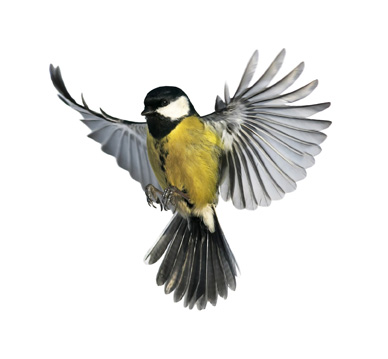

Try These Steps for Better Birdwatching
Anyone can see a bird. Just go outside and look around. No matter where you are you should see birds. Bird watchers have developed some techniques that make it possible to find, and get good looks at, more birds than if you just step out and look around.
Use these tips to see more birds, have more fun!
1. Be quiet. Birds are easily startled by loud noises and will flee to cover. It is almost impossible to sneak up on a bird, because birds hear much better than human beings do. By minimizing noise, you can get much closer to a bird. The overwhelming temptation, when seeing an especially exciting bird, is to yell: “WOW! LOOK AT THAT! IT’S RIGHT OVER THERE!”
Bird watchers learn pretty quickly that the same message can be whispered. The result is that the bird is more likely to remain for everyone to see, for a long and leisurely look.
2. Avoid sudden movements. Just as loud noises startle birds, so does sudden movement. Getting close to a bird means stalking it, moving slowly and deliberately. Sudden, jerky movement, even when swinging your binoculars up to your eyes, can make a bird nervous enough to fly away. The closer you are to a bird, the more slowly and quietly you should move.
3. Follow the crowd. In the nonbreeding season (the winter months in most of North America) many small songbirds join flocks of mixed species both for protection and to make finding food easier. Typically these flocks are largely silent, but there will almost always be one or two birds making call notes. Following a single calling bird will often lead you to a larger feeding flock. In fall, a single chip note from high in the trees may signal the presence of a dozen or so warblers. In winter a seep sound from down in the thicket may mean that 20 or more sparrows, towhees, cardinals, and other seed eaters are present. Following a solitary chick-a-dee-dee call may lead you to a mixed flock of chickadees, titmice, nuthatches, kinglets, and woodpeckers.
4. Study habitat. Each bird is specially adapted to a particular habitat. Meadowlarks prefer large open fields, woodpeckers need trees, sparrows favor thickets. What you see will depend in large part on where you look.
5. Work the flocks. Your chance of finding an unusual bird is far greater in a flock, just because you have more birds to look at. Banding studies have shown that when you think you have ten chickadees in your yard, there are probably 20, and when you think you have seen all 20 sparrows in the brush pile, there are probably 20 more.
6. Be patient. A sparrow hopping around in a bush will eventually move into a spot where you can get a good look. Bird watching is often about being patient and waiting for the birds to show themselves.
7. Get the sun at your back. It is not always possible, but moving around so that the sun is behind you will make it much easier to see and identify birds. When the bird is between you and the sun, color disappears, and the bird you are trying to identify may be just a black silhouette.
8. Try pishing. Sometimes, no matter how patient you are, no matter how slowly and quietly you move, you just cannot get a good look at the bird. When this happens, bird watchers try a technique called pishing. Pishing involves making small, squeaky noises by kissing the back of your hand or making a low whistled pish by blowing air through your closed teeth. Small birds are attracted to such sounds and will often pop into view to investigate. Here’s how to pish: Clench your teeth, open your lips and whisper the word pish.
9. Avoid brightly colored clothes. Many birds have poor color vision, but bright clothes, like whites, will contrast with the surrounding environment and enhance the appearance of movement. Wear darker colors or earth tones to blend into the background. There is no evidence that actual camouflage clothing works better than neutral, dark clothing.
10. Look around. Many bird watchers, focused on the flock in the thicket, forget to look at the other habitats around them. In particular, they forget to look up and thus miss the flock of geese or the soaring hawk. Or, while studying the ducks on the lake, unaware bird watchers may ignore the flock of kinglets in the trees behind them and miss seeing a new bird.